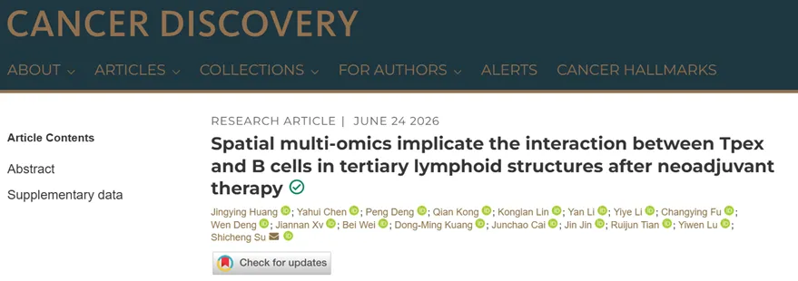
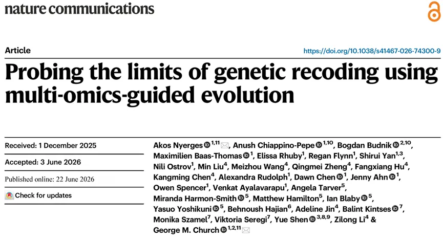
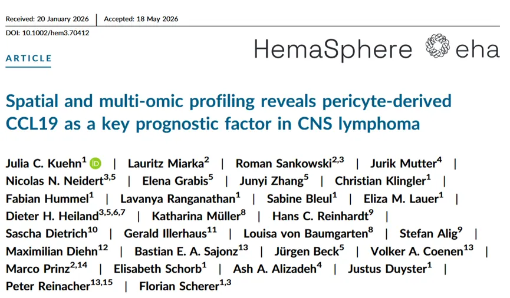
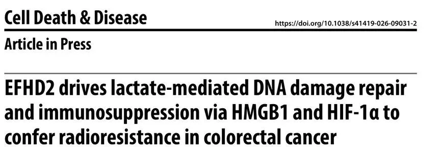
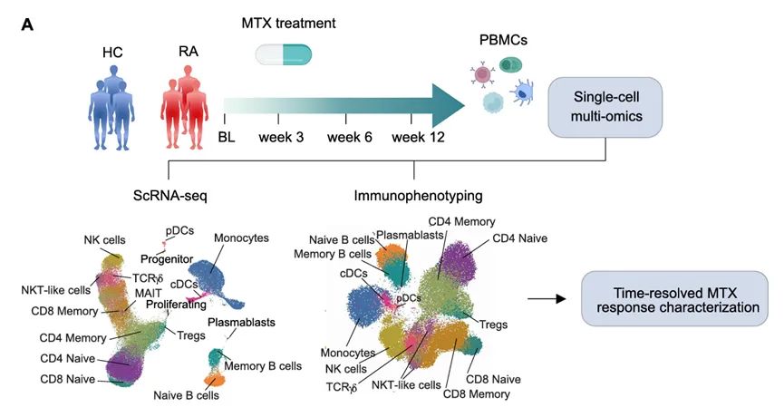
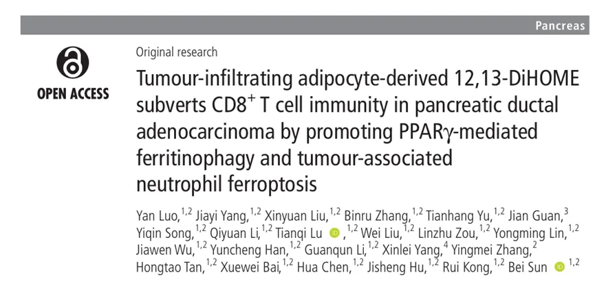
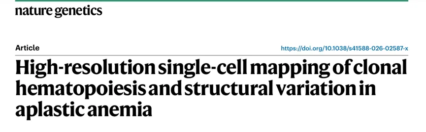
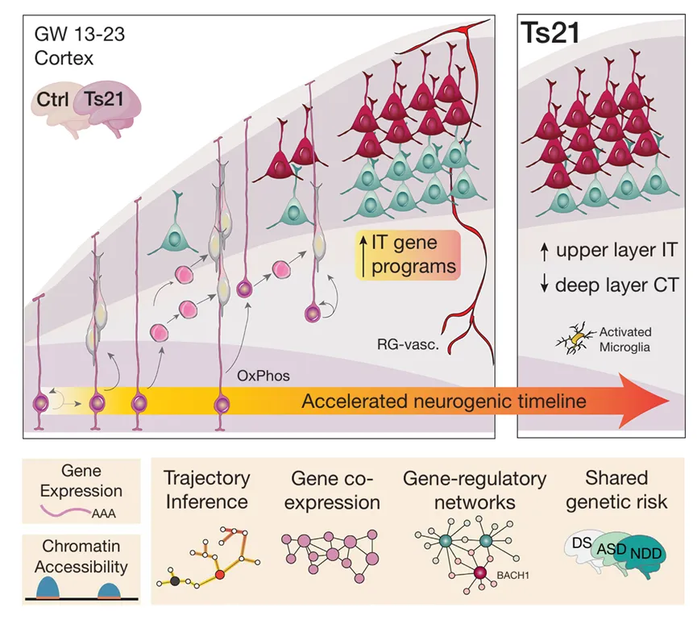
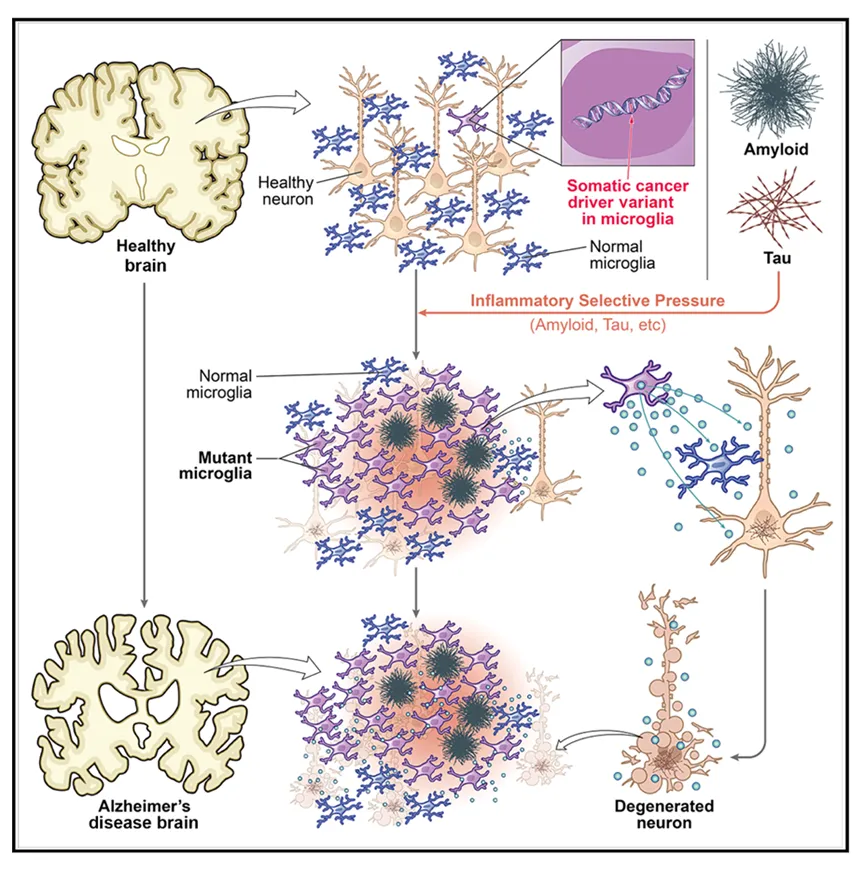

纯生信分析≠灌水！这些无实验文章纯生信照样冲高分！
原文：https://mp.weixin.qq.com/s?__biz=MzAwMzIzOTk5OQ==&mid=2247539189&idx=1&sn=9005982544cd98d4ecec964837fd809b&chksm=9b3c20a5ac4ba9b377fd0f6c02cf9840c42e596c942309934d2650ff6168ed03abf6a2c8ece6#rd 合集：文献速递
一、写在前面
随着AI技术的发展，生信分析门槛降低，出现了 “纯生信难发高分、仅靠数据库挖掘没有科研价值”的观点，在我们的生信交流群中，也有读者发出“现在哪种套路的生信分析好发？”、“生信人的出路在哪里”等疑问。
其实这些话题在没有AI的时代就存在，没必要制造发文焦虑，本文结合多篇已发表几乎纯生信高分文献实例，拆解纯生信文章的创新逻辑，来看看纯生信分析的发文潜力。
生信基地现在还推出了生信分析服务，感兴趣的小伙伴可以滴滴客服[Biomamba_zhushou]详谈！
如果需要单细胞数据分析教学、生信热点全文复现、自测数据个性化分析辅导、实验科研服务和常态化实验学习，欢迎联系后台。
二、主要内容
一、题目：Spatial multi-omics implicate the interaction between Tpex and B cells in tertiary lymphoid structures after neoadjuvant therapy
IF：29.5
期刊：Cancer Discovery
发表日期：2026.06
DOI: 10.1158/2159-8290.CD-25-0806

此研究利用具有全转录组覆盖和 单细胞分辨率的空间转录组学，结合高通量空间蛋白质组学及 TCR测序，系统表征了乳腺癌患者新辅助治疗后肿瘤组织中三级淋巴结构（TLS）的空间药效动力学特征。研究发现，前体耗竭T细胞（Tpex）优先定居于TLS内部，且这些Tpex细胞具有肿瘤特异性，其克隆相关的终末分化效应T细胞则分布于TLS外部，提示TLS是Tpex细胞扩增并向外输出效应T细胞的核心生态位。
在细胞互作层面，空间分析揭示B细胞是TLS内Tpex细胞的最近邻，并通过ICOSL-ICOS和CD86-CD28两条共刺激信号轴促进Tpex细胞的再激活与功能维持。上述发现深化了对TLS空间架构的理解，阐明了新辅助治疗诱导的抗肿瘤免疫应答进化机制，并提示靶向TLS内Tpex-B细胞互作信号轴可能是增强肿瘤免疫治疗疗效的潜在策略。
二、题目：Probing the limits of genetic recoding using multi-omics-guided evolution
IF：18.1
期刊：Nature Communications
发表日期：2026.06
DOI:10.1038/s41467-026-74300-9

此研究通过对64个自然密码子中的多个密码子进行重新分配（重编码），探索了合成基因组工程的可能性与挑战。研究团队利用基因组合成技术构建了六株部分重编码的大肠杆菌菌株，最高携带45.8%的合成基因组片段，并采用57密码子遗传密码。然而，同义密码子替换频繁导致致死性表型，**研究通过基因组 -转录组-翻译组-蛋白质组的多组学联合分析，**系统揭示了重编码导致的广泛缺陷，包括Syn61和Syn57中未被识别的密码子问题，并据此修订了基因组设计方案以减轻这些缺陷。
在机制与应用层面，多组学分析表明，重编码在数百种条件下均可诱导转录和翻译层面的广泛变化，进而导致菌株适应性下降。为解决这一问题，研究团队开发了一种多组学引导的定向进化策略，能够快速恢复菌株适应性，从而实现含有根本性遗传密码改变的基因组合成。这一策略不仅为理解重编码对细胞生理的影响提供了系统性框架，也为构建抗病毒、隔离遗传信息交换、以及生物合成非天然聚合物的工程菌株奠定了重要基础。
三、题目：Spatial and multi-omic profiling reveals pericyte-derived CCL19 as a key prognostic factor in CNS lymphoma
IF：11.3
期刊：Hemasphere
发表日期：2026.06
DOI: 10.1002/hem3.70412

此研究针对中枢神经系统淋巴瘤（CNSL）临床异质性背景下的生物学机制开展了深入探索。研究团队对 82例CNSL样本进行了全面的遗传和转录组分析，发现高CCL19表达的淋巴瘤具有独特的基因变异谱和肿瘤细胞组成，且均与免疫抑制和抗凋亡特征相关。统计分析显示，高CCL19表达与患者无进展生存期和总生存期的显著缩短独立相关，提示其作为预后不良标志物的临床价值。
在细胞来源与空间定位层面，研究通过空间转录组学、单核转录组学及 免疫组化分析，证实血管丰富区域的周细胞（pericytes）是CCL19的主要来源细胞。其主要受体CCR7则高度富集于浆母细胞样恶性B细胞、树突状细胞、NK细胞及CD4⁺ T细胞中，且与CCL19存在显著的空间共定位。综合来看，本研究确立了周细胞来源的CCL19作为CNSL新型预后标志物的地位，其高表达与不良遗传变异及肿瘤微环境向免疫静息状态转化密切相关，而CCL19-CCR7轴的空间互作特征也为未来靶向治疗策略的开发提供了重要方向。
四、题目：EFHD2 drives lactate-mediated DNA damage repair and immunosuppression via HMGB1 and HIF-1α to confer radioresistance in colorectal cancer
IF：12.2
期刊：Cell Death Dis
发表日期：2026.06
DOI: 10.1038/s41419-026-09031-2

此研究聚焦于结直肠癌（CRC）放射抵抗的分子机制，通过**RNA 测序、蛋白质组学、乳酰化蛋白质组学、空间转录组及单细胞RNA测序等多组学手段，**结合体内外功能验证实验，系统揭示了hsa-let-7b-5p/EFHD2轴在放射抵抗中的核心作用。研究发现，hsa-let-7b-5p在放射抵抗的CRC中显著下调，导致其靶基因EFHD2过表达；EFHD2通过与HMGB1相互作用稳定HIF-1α、增强乳酸代谢，进而引发自身第9位赖氨酸的乳酰化修饰（K9 lactylation），而这一修饰是EFHD2激活RAD51/RPA2介导的同源重组DNA修复功能的必要条件，从而赋予肿瘤细胞放射抵抗能力。
五、题目：A multimodal single-cell framework for ecosystem-level profiling of circulating tumor and non-tumor cells
IF：17.5
期刊：Exp Hematol Oncol
发表日期：2026.06
DOI: 10.1186/s40164-026-00796-y
本研究对6例晚期结直肠癌患者的循环肿瘤细胞（CTC）及非肿瘤循环细胞进行了多模态单细胞多组学分析，共鉴定出3,981个CTC，这些细胞呈现EpCAM/L1CAM共表达显著、PD-L1表达可变、LGR5表达低的特征，符合转移相关表型。对1,720个细胞的整合单细胞多组学分析 揭示了EpCAM⁺、L1CAM⁺、LGR5⁺和PD-L1⁺等CTC亚群内部的基因组不稳定性，包括男性患者的Y染色体缺失及显著的患者内异质性；与此同时，非CTC细胞群表现出炎症和代谢失调相关程序的上调。该研究表明，基于血液的多模态单细胞分析能够超越传统CTC计数的局限，为深入解析肿瘤-宿主相互作用状态提供更丰富的生物学信息。
六、题目：Time-resolved immune dynamics in rheumatoid arthritis under methotrexate therapy
IF：24.0
期刊：Ann Rheum Dis
发表日期：2026.06
DOI: 10.1016/j.ard.2026.05.018

本研究通过前瞻性纵向设计，对6例初诊类风湿关节炎（RA）患者在甲氨蝶呤（MTX）治疗前后的多个时间点进行外周血单个核细胞（PBMC）的高参数免疫表型分析和单细胞 RNA测序，并在22例独立队列患者中进行验证。研究发现，MTX可在治疗启动后短至 3周内即诱导快速的免疫重塑，且早于临床症状改善出现；其中最早、最显著的变化发生在滤泡辅助 T细胞（Tfh）和浆母细胞，两者在临床应答者中选择性下降，而在非应答者中基本不变，提示其可作为早期疗效预测生物标志物。此外，转录组网络分析 还鉴定出与MTX暴露相关的新型调控节点，包括LMNA、SCO2、GVQW3及GIMAP家族成员，功能实验进一步证实MTX可损害浆母细胞的分化发育，为理解MTX免疫学机制及指导RA精准治疗提供了重要依据。
七、题目：Tumour-infiltrating adipocyte-derived 12,13-DiHOME subverts CD8 +T cell immunity in pancreatic ductal adenocarcinoma by promoting PPARγ-mediated ferritinophagy and tumour-associated neutrophil ferroptosis
IF：24.6
期刊：Gut
发表日期：2026.05
DOI: 10.1136/gutjnl-2025-337119

此研究揭示了胰腺导管腺癌（PDAC）中肿瘤浸润脂肪细胞（TIA）介导免疫抑制的新机制。通过整合正位PDAC小鼠模型、KPC基因工程小鼠、中性粒细胞特异性PPARγ条件敲除小鼠、肿瘤代谢组学、 bulk RNA-seq及单细胞RNA测序，并在121例患者回顾性队列中进行验证，研究发现高TIA丰度与患者总生存期缩短及免疫抑制性肿瘤微环境显著相关。机制上，脂肪细胞来源的代谢产物12,13-DiHOME 通过激活肿瘤相关中性粒细胞（TAN）中PPARγ依赖的铁蛋白自噬信号，促进TAN发生铁死亡（ferroptosis）并上调CXCL2分泌，进而损害CD8⁺ T细胞功能；而遗传或药理学手段阻断该轴、中和CXCL2或封闭CXCR2，均可减弱促肿瘤表型并恢复CD8⁺ T细胞功能，提示靶向脂肪细胞-TAN免疫代谢回路是缓解PDAC免疫抑制的潜在治疗策略。
八、题目：High-resolution single-cell mapping of clonal hematopoiesis and structural variation in aplastic anemia
IF：13.1
期刊：Nat Genet
DOI: 10.1038/s41588-026-02587-x
发表日期：2026.05

此研究通过对619例再生障碍性贫血（AA）患者的基因组分析及48份样本共304,902个细胞的单细胞多组学分析，系统揭示了AA中造血干祖细胞（HSPC）逃避T细胞免疫攻击的平行进化机制。研究发现，69%的AA患者存在克隆性造血，其中ASXL1、BCOR和BCORL1是儿童患者中最常见的CHIP突变；单细胞多组学揭示了复杂的分支克隆结构，每例患者中位存在3个HLA缺失事件，且这些事件汇聚性地灭活HLA风险等位基因；单细胞全基因组测序（WGS）在单个患者中最多解析出15个HLA缺失克隆，系统发育重建表明这些克隆在诊断前数年即已起源，长读长WGS则精确定位了UPD6p断点及HLA甲基化特征。此外，HLA缺失与CHIP突变几乎不共存，提示两者代表相互独立的免疫逃逸路径，而纵向单细胞分析进一步证实长寿命克隆富集于CD34⁺HSPC区室，共同揭示了造血细胞通过HLA丢失和CHIP突变两条平行进化路径实现免疫逃逸的核心机制。
九、题目: A single-cell multiomic analysis identifies molecular and gene-regulatory mechanisms dysregulated in developing Down syndrome neocortex
IF：47.3
期刊：Science
发表日期：2026.04

此研究通过对26例供体人类中期妊娠新皮层进**行单核多组学（ snMultiomics）分析，**系统揭示了唐氏综合征（DS）早期神经发育异常的分子机制。研究发现，DS新皮层中神经祖细胞和皮质丘脑神经元数量减少，而皮质内神经元增多，并伴随神经元规格化进程加速；在分子层面，基因表达、染色质可及性及细胞互作网络均发生广泛改变，涉及神经发生、细胞命运规格化和神经元成熟等关键过程，且这些变化部分由21号染色体（HSA21）编码基因下游的基因调控网络所驱动。此外，研究还鉴定出DS与其他神经发育障碍共享的细胞特异性分子通路，并在DS相关染色质改变区域发现全基因组关联研究（GWAS）信号的富集，共同勾勒出DS最早期神经发育异常的分子级联调控图谱，为未来治疗靶点的开发奠定了重要基础。
十、题目：Somatic cancer variants enriched in Alzheimer's disease microglia-like cells drive inflammatory and proliferative states
IF：45.1
期刊：Cell
发表日期：2026.06
DOI: 10.1016/j.cell.2026.03.040

本研究通过对 311例脑组织样本进行深度（>1,000×）靶向测序，发现阿尔茨海默病（AD）脑组织中癌症驱动基因的体细胞单核苷酸变异（sSNVs）显著富集，尤其集中于克隆性造血（CH）相关基因，且这些变异同时存在于多个脑区的小胶质细胞样脑巨噬细胞（MLBMs）及配对血液样本中，提示其可能源自造血系统。对62例AD及对照脑组织的单核 RNA测序进一步揭示，AD患者MLBMs中CH相关体细胞拷贝数变异（sCNVs）显著增加；**单细胞多组学分析表明，**携带sSNV和sCNV的MLBMs呈现出疾病相关小胶质细胞特征性的炎症和增殖转录特征，且这一表型在携带TET2、ASXL1和DNMT3A突变的iPSC来源小胶质细胞样细胞中得到重现，共同表明MLBMs中富集的克隆性体细胞驱动突变可能通过促进神经炎症和神经退行性变推动AD的疾病进展。

如何联系我们

 留一个领取资料、开箱即用的单细胞分析镜像的微信号[Biomamba_zhushou]，方便各位随时交流。同时我们也构建了交流群矩阵，欢迎大家入群讨论。
大家可以阅读完这几篇之后添加给生信入门初学者的小贴士没有检索，就没有发言权
留一个领取资料、开箱即用的单细胞分析镜像的微信号[Biomamba_zhushou]，方便各位随时交流。同时我们也构建了交流群矩阵，欢迎大家入群讨论。
大家可以阅读完这几篇之后添加给生信入门初学者的小贴士没有检索，就没有发言权
已有生信基地联系方式的同学无需重复添加

 您点的每个赞和在看，我都认真当成了喜欢
您点的每个赞和在看，我都认真当成了喜欢